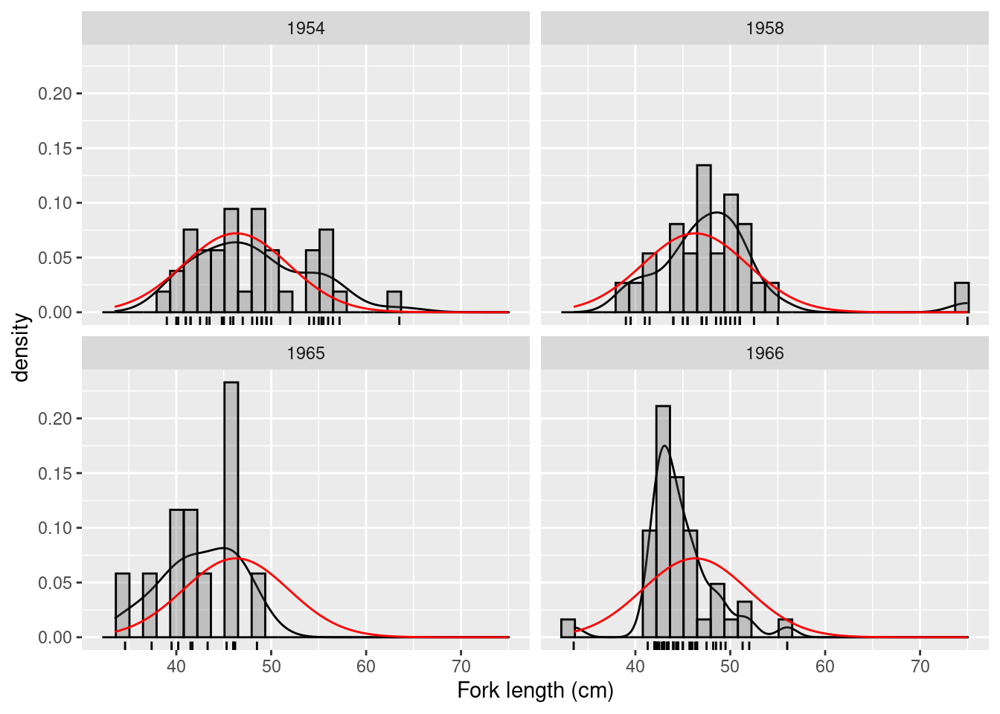
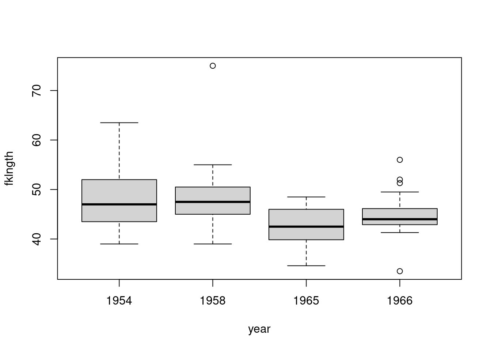
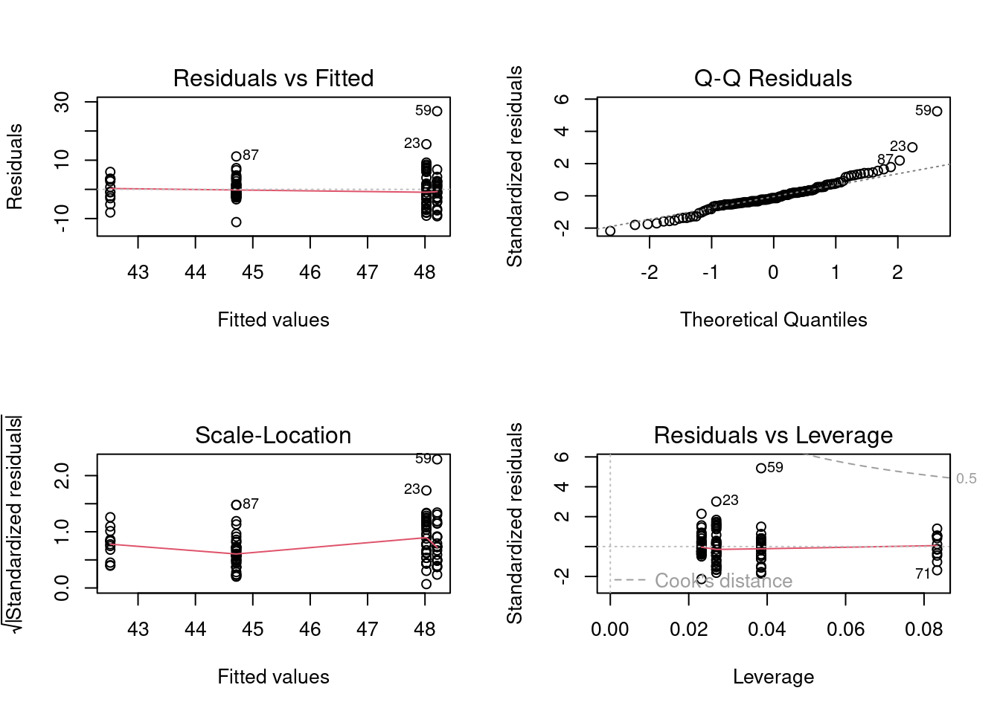
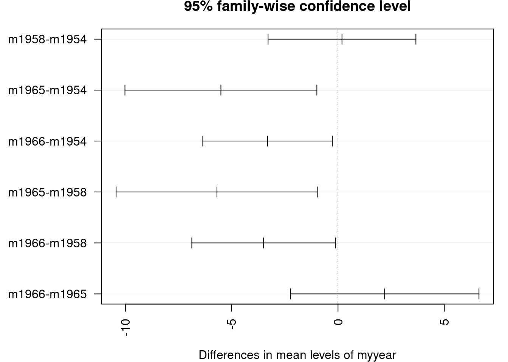
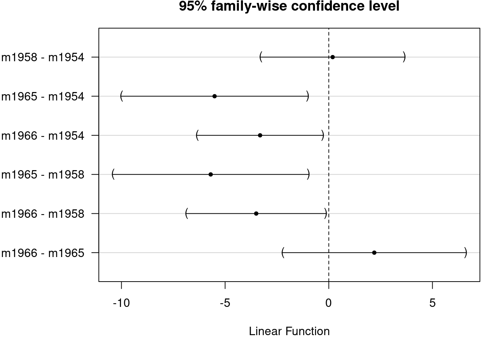
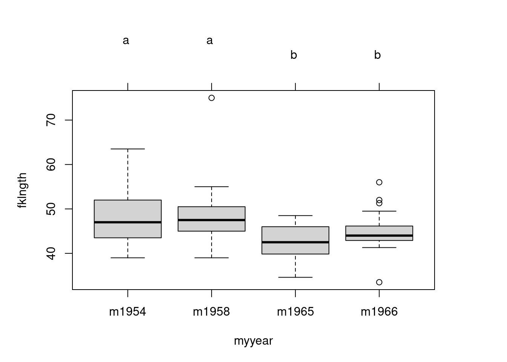
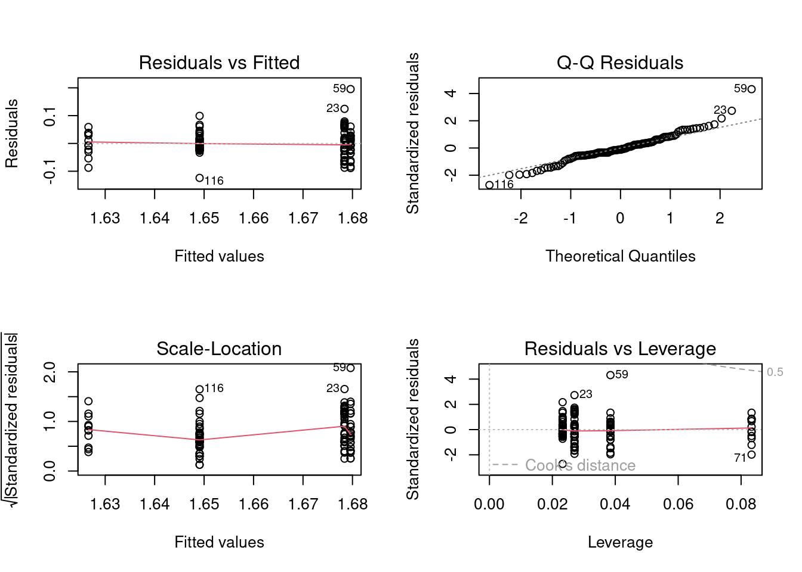

5 One-way ANOVA
After completing this laboratory exercise, you should be able to:
- Use R to do a one-way parametric ANOVA with multiple comparisons
- Use R to test the validity of the parametric ANOVA assumptions
- Use R to perform a one-way non-parametric ANOVA
- Use R to transform your data so that the assumptions of parametric ANOVA are met.
5.1 R packages and data
For this lab you need:
- R packages:
- ggplot2
- multcomp
- car
- data
- dam10dat.csv
5.2 One-way ANOVA with multiple comparisons
The one-way ANOVA is the multi-group analog of the t-test, which is used to compare two groups/levels. It makes essentially the same assumptions, and in the case of two groups/levels, is in fact mathematically equivalent to the t-test.
In 1960-1962, the Grand Rapids Dam was built on the Saskatchewan River upstream of Cumberland House. There are anecdotal reports that during dam construction, a number of large sturgeon were stranded and died in shallow pools. Surveys of sturgeon were carried out in 1954, 1958, 1965 and 1966 with fork length (fklngth) and round weight (rdwght) being recorded (not necessarily both measurements for each individual). These data are in the data file Dam10dat.csv.
5.2.1 Visualiser les données
- Using
Dam10dat.csv, you must first change the data type of the numerical variable year , so that R recognizes that we wish to treat this variable as a factor variable and not a continuous variable.
'data.frame': 118 obs. of 21 variables:
$ year : Factor w/ 4 levels "1954","1958",..: 1 1 1 1 1 1 1 1 1 1 ...
$ fklngth : num 45 50 39 46 54.5 49 42.5 49 56 54 ...
$ totlngth: num 49 NA 43 50.5 NA 51.7 45.5 52 60.2 58.5 ...
$ drlngth : logi NA NA NA NA NA NA ...
$ drwght : num 16 20.5 10 17.5 19.7 21.3 9.5 23.7 31 27.3 ...
$ rdwght : num 24.5 33 15.5 28.5 32.5 35.5 15.3 40.5 51.5 43 ...
$ sex : int 1 1 1 2 1 2 1 1 1 1 ...
$ age : int 24 33 17 31 37 44 23 34 33 47 ...
$ lfkl : num 1.65 1.7 1.59 1.66 1.74 ...
$ ltotl : num 1.69 NA 1.63 1.7 NA ...
$ ldrl : logi NA NA NA NA NA NA ...
$ ldrwght : num 1.2 1.31 1 1.24 1.29 ...
$ lrdwght : num 1.39 1.52 1.19 1.45 1.51 ...
$ lage : num 1.38 1.52 1.23 1.49 1.57 ...
$ rage : int 4 6 3 6 7 7 4 6 6 7 ...
$ ryear : int 1954 1954 1954 1954 1954 1954 1954 1954 1954 1954 ...
$ ryear2 : int 1958 1958 1958 1958 1958 1958 1958 1958 1958 1958 ...
$ ryear3 : int 1966 1966 1966 1966 1966 1966 1966 1966 1966 1966 ...
$ location: int 1 1 1 1 1 1 1 1 1 1 ...
$ girth : logi NA NA NA NA NA NA ...
$ lgirth : logi NA NA NA NA NA NA ...- Next, have a look at the fklngth data, just as we did in the last lab for t-tests. Create a histogram with density line grouped by year to get a feel for what’s happening with your data and a boxplot of length per year. What can you say about these data?
mygraph <- ggplot(dam10dat, aes(x = fklngth)) +
labs(x = "Fork length (cm)") +
geom_density() +
geom_rug() +
geom_histogram(aes(y = ..density..),
color = "black",
alpha = 0.3
) +
stat_function(
fun = dnorm,
args = list(
mean = mean(dam10dat$fklngth),
sd = sd(dam10dat$fklngth)
),
color = "red"
)
# display graph, by year
mygraph + facet_wrap(~year, ncol = 2)
boxplot(fklngth ~ year, data = dam10dat)
It appears as though there may have been a small drop in fklngth after the construction of the dam, but the data are variable and the effects are not clear. There might also be some problems with normality in the 1954 and 1966 samples, and it looks as though there are outliers in the 1958 and 1966 samples. Let’s proceed with testing the assumptions of the ANOVA by running the analysis and looking at the residuals.
5.2.2 Testing the assumptions of a parametric ANOVA
Parametric one-way ANOVAs have three major assumptions:
- the residuals are normally distributed
- the error variance is the same for all groups (homoscedasticity)
- the residuals are independent.
These assumptions must be tested before we can accept the results of any parametric ANOVA.
- Carry out a one-way ANOVA on fklngth by year and produce the residual diagnostic plots
# Fit anova model and plot residual diagnostics
anova.model1 <- lm(fklngth ~ year, data = dam10dat)
par(mfrow = c(2, 2))
plot(anova.model1)
Double check that the independent variable is a factor. If the dependent variable is a character, then you will obtain only 3 graphs and an error message like:
`hat values (leverages) are all = 0.1
and there are no factor predictors; no plot no. 5`
D’après les graphiques, on peut douter de la normalité et de l’homogénéité des variances. Judging from the plots, it looks as though there may be problems with both normality and variance heterogeneity. Note that there is one point (case 59) with large expected values and a large residual that appear to lie well off the line: this is the outlier we noted earlier. This point might be expected to inflate the variance for the group it belongs to. Formal tests may also provide some insight as to whether we should be concerned about normality and variance heterogeneity.
- Perform a normality test on the residuals from the ANOVA.
shapiro.test(residuals(anova.model1))
Shapiro-Wilk normality test
data: residuals(anova.model1)
W = 0.91571, p-value = 1.63e-06This test confirms our suspicions from the probability plot: the residuals are not normally distributed. Recall, however, that the power here is high, so only small deviations from normality are required to reject the null.
- Next, test for homoscedasticity:
leveneTest(fklngth ~ year, data = dam10dat)Levene's Test for Homogeneity of Variance (center = median)
Df F value Pr(>F)
group 3 2.8159 0.04234 *
114
---
Signif. codes: 0 '***' 0.001 '**' 0.01 '*' 0.05 '.' 0.1 ' ' 1The probability value tells you that you can reject the null hypothesis that there is no difference in variances among years. Thus, we conclude there is evidence that the variances in the groups are not equal.
5.2.3 Performing the ANOVA
Let’s look at the results of the ANOVA, assuming for the moment that assumptions are met well enough.
summary(anova.model1)
Call:
lm(formula = fklngth ~ year, data = dam10dat)
Residuals:
Min 1Q Median 3Q Max
-11.2116 -2.6866 -0.7116 2.2103 26.7885
Coefficients:
Estimate Std. Error t value Pr(>|t|)
(Intercept) 48.0243 0.8566 56.061 < 2e-16 ***
year1958 0.1872 1.3335 0.140 0.88859
year1965 -5.5077 1.7310 -3.182 0.00189 **
year1966 -3.3127 1.1684 -2.835 0.00542 **
---
Signif. codes: 0 '***' 0.001 '**' 0.01 '*' 0.05 '.' 0.1 ' ' 1
Residual standard error: 5.211 on 114 degrees of freedom
Multiple R-squared: 0.1355, Adjusted R-squared: 0.1128
F-statistic: 5.957 on 3 and 114 DF, p-value: 0.0008246- Coefficients: Estimates Note the 4 coefficients printed. They can be used to obtain the predicted values for the model (i.e. the group means). The mean fklngth for the first year (1954) is 48.0243. The coefficients for the 3 other years are the difference between the mean for that year and for 1954. So, the mean for 1965 is (48.0243-5.5077=42.5166). For each estimated coefficient, there is a standard error, a t-value and associated probability (for H0 that the coefficient is 0). Note here that coefficients for 1965 and 1966 are both negative and significantly less than 0. Fish were smaller after the construction of the dam than in 1954. Take these p-values with a grain of salt: these are not corrected for multiple comparisons, and they constitute only a subset of the possible comparisons. In general, I pay little attention to this part of the output and look more at what comes next.
- Residual standard error: The square root of the variance of the residuals (observed minus fitted values) corresponds to the amount of variability that is unexplained by the models (here an estimate of how much size varied among fish, once corrected for differences among years)
-
Mutiple R-squared The R-squared is the proportion of the variance of the dependent variable that can be explained by the model. Here the model explains only 13.5% of the variability. Size differences among year are relatively small compared to the ranges of sizes that can occur within years. This corresponds well to the visual impression left by the histograms of
fklngthperyear
- F-Statistic This is the p-value for the “omnibus” test, the test that all means are equal. Here it is much smaller than 0.05 and hence we would reject H0 and conclude that fklngth varies among the years
The anova() command produces the standard ANOVA table that contains most of the same information:
anova(anova.model1)Analysis of Variance Table
Response: fklngth
Df Sum Sq Mean Sq F value Pr(>F)
year 3 485.26 161.755 5.9574 0.0008246 ***
Residuals 114 3095.30 27.152
---
Signif. codes: 0 '***' 0.001 '**' 0.01 '*' 0.05 '.' 0.1 ' ' 1The total variability in fklngth sums of square is partitioned into what can be accounted for by year (485.26) and what is left unexplained as residual variability (3095.30). Year indeed explains \((485.26/(3095.30+485.26)=.1355\) or 13.55% of the variability). The mean square of the residuals is their variance.
5.2.4 Performing multiple comparisons of means test
- The
pairwise.t.test()function can be used to compare means and adjust (or not) probabilities for multiple comparisons by choosing one of the options for the argumentp.adj:
Comparing all means without corrections for multiple comparisons.
pairwise.t.test(dam10dat$fklngth, dam10dat$year,
p.adj = "none"
)
Pairwise comparisons using t tests with pooled SD
data: dam10dat$fklngth and dam10dat$year
1954 1958 1965
1958 0.8886 - -
1965 0.0019 0.0022 -
1966 0.0054 0.0079 0.1996
P value adjustment method: none Option "bonf" adjusts the p-values according to the Bonferroni correction. In this case, since there are 6 p-values calculated, it amounts to simply multiplying the uncorrected p-values by 6 (unless the result is above 1, in that case the adjusted p-value is 1).
pairwise.t.test(dam10dat$fklngth, dam10dat$year,
p.adj = "bonf"
)
Pairwise comparisons using t tests with pooled SD
data: dam10dat$fklngth and dam10dat$year
1954 1958 1965
1958 1.000 - -
1965 0.011 0.013 -
1966 0.033 0.047 1.000
P value adjustment method: bonferroni Option "holm" is the sequential Bonferroni correction, where the p-values are ranked from (i=1) smallest to (N) largest. The correction factor for p-values is then $\((N-i+1)\). Here, for example, we have N=6 pairs that are compared. The lowest uncorrected p-value is 0.0019 for 1954 vs 1965. The corrected p-value becomes \(0.0019*(6-1+1)= 0.011\). The second lowest p-value is 0.0022. The corrected p/value is therefore \(0.0022*(6-2+1)=0.011\). For the highest p-value, the correction is \((N-N+1)=1\), hence it is equal to the uncorrected probability.
pairwise.t.test(dam10dat$fklngth, dam10dat$year,
p.adj = "holm"
)
Pairwise comparisons using t tests with pooled SD
data: dam10dat$fklngth and dam10dat$year
1954 1958 1965
1958 0.889 - -
1965 0.011 0.011 -
1966 0.022 0.024 0.399
P value adjustment method: holm The “fdr” option is for controlling the false discovery rate.
pairwise.t.test(dam10dat$fklngth, dam10dat$year,
p.adj = "fdr"
)
Pairwise comparisons using t tests with pooled SD
data: dam10dat$fklngth and dam10dat$year
1954 1958 1965
1958 0.8886 - -
1965 0.0066 0.0066 -
1966 0.0108 0.0119 0.2395
P value adjustment method: fdr The four post-hoc tests here tell us the same thing: differences are all between two groups of years: 1954/58 and 1965/66, since all comparisons show differences between the 50’s and 60’s but no differences within the 50’s or 60’s. So, in this particular case, the conclusion is not affected by the choice of adjustment method. But in other situations, you will observe contradictory results.
Which one to choose? Unadjusted p-values are certainly suspect when there are multiple tests. On the other hand, the traditional Bonferroni correction is very conservative, and becomes even more so when there are a large number of comparisons. Recent work suggest that the fdr approach may be a good compromise when there are a lot of comparisons. The Tukey method of multiple comparisons is one of the most popular and is easily performed with R (note, however, that there is a pesky bug that manifests itself when the independent variable can look like a number rather than a factor, hence the little pirouette with paste0() to add a letter m before the first digit):
dam10dat$myyear <- as.factor(paste0("m", dam10dat$year))
TukeyHSD(aov(fklngth ~ myyear, data = dam10dat)) Tukey multiple comparisons of means
95% family-wise confidence level
Fit: aov(formula = fklngth ~ myyear, data = dam10dat)
$myyear
diff lwr upr p adj
m1958-m1954 0.1872141 -3.289570 3.6639986 0.9990071
m1965-m1954 -5.5076577 -10.021034 -0.9942809 0.0100528
m1966-m1954 -3.3126964 -6.359223 -0.2661701 0.0274077
m1965-m1958 -5.6948718 -10.436304 -0.9534397 0.0116943
m1966-m1958 -3.4999106 -6.875104 -0.1247171 0.0390011
m1966-m1965 2.1949612 -2.240630 6.6305526 0.5710111
The confidence intervals, corrected for multiple tests by the Tukey method, are plotted for differences among years. Unfortunately, the labels are not all printed because they would overlap, but the order is the same as in the preceding table. The multcomp 📦 can produce a better plot version, but requires a bit more code:
# Alternative way to compute Tukey multiple comparisons
# set up a one-way ANOVA
anova_fkl_year <- aov(fklngth ~ myyear, data = dam10dat)
# set up all-pairs comparisons for factor `year'
meandiff <- glht(anova_fkl_year, linfct = mcp(
myyear =
"Tukey"
))
confint(meandiff)
Simultaneous Confidence Intervals
Multiple Comparisons of Means: Tukey Contrasts
Fit: aov(formula = fklngth ~ myyear, data = dam10dat)
Quantile = 2.5924
95% family-wise confidence level
Linear Hypotheses:
Estimate lwr upr
m1958 - m1954 == 0 0.1872 -3.2696 3.6440
m1965 - m1954 == 0 -5.5077 -9.9951 -1.0202
m1966 - m1954 == 0 -3.3127 -6.3417 -0.2837
m1965 - m1958 == 0 -5.6949 -10.4091 -0.9807
m1966 - m1958 == 0 -3.4999 -6.8557 -0.1441
m1966 - m1965 == 0 2.1950 -2.2152 6.6051
This is better. Also useful is a plot the means and their confidence intervals with the Tukey groupings shown as letters above:
# Compute and plot means and Tukey CI
means <- glht(
anova_fkl_year,
linfct = mcp(myyear = "Tukey")
)
cimeans <- cld(means)
# use sufficiently large upper margin
# plot
old_par <- par(mai = c(1, 1, 1.25, 1))
plot(cimeans)
Note the letters appearing on top. Years labelled with the same letter do not differ significantly.
5.3 Data transformations and non-parametric ANOVA
In the above example to examine differences in fklngth among years , we detected evidence of non-normality and variance heterogeneity. If the assumptions underlying a parametric ANOVA are not valid, there are several options:
- if sample sizes in each group are reasonably large, parametric ANOVA is reasonably robust with respect to the normality assumption, for the same reason that the t-test is, so the results are probably not too bad;
- we can transform the data;
- we can go the non-parametric route.
- Repeat the one-way ANOVA in the section above, but this time run the analysis on the log 10 fklngth . With this transformation, do some of the problems encountered previously disappear?
# Fit anova model on log10 of fklngth and plot residual diagnostics
par(mfrow = c(2, 2))
anova.model2 <- lm(log10(fklngth) ~ year, data = dam10dat)
plot(anova.model2)
Looking at the residuals, things look barely better than before without the log transformation. Running the Wilks-Shapiro test for normality on the residuals, we get:
shapiro.test(residuals(anova.model2))
Shapiro-Wilk normality test
data: residuals(anova.model2)
W = 0.96199, p-value = 0.002048So, it would appear that we still have some problems with the assumption of normality and are just on the border line of meeting the assumption of homogeneity of variances. You have several choices here:
- try to find a different transformation to satisfy the assumptions,
- assume the data are close enough to meeting the assumptions, or
- perform a non-parametric ANOVA.
- The most commonly used non-parametric analog of the parametric one-way ANOVA is the Kruskall-Wallis one-way ANOVA. Perform a Kruskall-Wallis one-way ANOVA of
fklngth, and compare these results to the parametric analysis above. What do you conclude?
kruskal.test(fklngth ~ year, data = dam10dat)
Kruskal-Wallis rank sum test
data: fklngth by year
Kruskal-Wallis chi-squared = 15.731, df = 3, p-value = 0.001288So, the conclusion is the same as with the parametric ANOVA: we reject the null that the mean rank is the same for each year. Thus, despite violation of one or more assumptions, the parametric analysis is telling us the same thing as the non-parametric analysis: the conclusion is, therefore, quite robust.
5.4 Dealing with outliers
Our preliminary analysis of the relationship between fklngth and year suggested there might be some outliers in the data. These were evident in the box plots of fklngth by year and flagged as cases 59, 23 and 87 in the residual probability plot and residual-fit plot. In general, you have to have very good reasons for removing outliers from a data set (e.g., you know there was a mistake made in the data collection/entry). However, it is often useful to know how the analysis changes if you remove the outliers from the data set.
- Repeat the original ANOVA of
fklngthbyyearbut work with a subset of the data without the outliers. Have any of the conclusions changed?
damsubset <- dam10dat[-c(23, 59, 87), ] # removes obs 23, 59 and 87
aov_damsubset <- aov(fklngth ~ as.factor(year), damsubset)
summary(aov_damsubset) Df Sum Sq Mean Sq F value Pr(>F)
as.factor(year) 3 367.5 122.50 6.894 0.000267 ***
Residuals 111 1972.4 17.77
---
Signif. codes: 0 '***' 0.001 '**' 0.01 '*' 0.05 '.' 0.1 ' ' 1shapiro.test(residuals(aov_damsubset))
Shapiro-Wilk normality test
data: residuals(aov_damsubset)
W = 0.98533, p-value = 0.2448leveneTest(fklngth ~ year, damsubset)Levene's Test for Homogeneity of Variance (center = median)
Df F value Pr(>F)
group 3 4.6237 0.004367 **
111
---
Signif. codes: 0 '***' 0.001 '**' 0.01 '*' 0.05 '.' 0.1 ' ' 1Elimination of three outliers, in this case, makes things better in terms of the normality assumption, but does not improve the variances. Moreover, the fact that the conclusion drawn from the original ANOVA with outliers retained does not change upon their removal reinforces the fact that there is no good reason to remove the points. Instead of a Kruskall-Wallis rank-based test, a permutation test could be used.
5.5 Permutation test
This is an example for a more complex way of doing permutation that we used when lmPerm was not available.
#############################################################
# Permutation Test for one-way ANOVA
# modified from code written by David C. Howell
# http://www.uvm.edu/~dhowell/StatPages/
# More_Stuff/Permutation%20Anova/PermTestsAnova.html
# set desired number of permutations
nreps <- 500
# to simplify reuse of this code, copy desired dataframe to mydata
mydata <- dam10dat
# copy model formula to myformula
myformula <- as.formula("fklngth ~ year")
# copy dependent variable vector to mydep
mydep <- mydata$fklngth
# copy independent variable vector to myindep
myindep <- as.factor(mydata$year)
################################################
# You should not need to modify code chunk below
################################################
# Compute observed F value for original sample
mod1 <- lm(myformula, data = mydata) # Standard Anova
sum_anova <- summary(aov(mod1)) # Save summary to variable
obs_f <- sum_anova[[1]]$"F value"[1] # Save observed F value
# Print standard ANOVA results
cat(
" The standard ANOVA for these data follows ",
"\n"
)
print(sum_anova, "\n")
cat("\n")
cat("\n")
print("Resampling as in Manly with unrestricted sampling of observations. ")
# Now start resampling
boot_f <- numeric(nreps) # initalize vector to receive permuted
values
boot_f[1] <- obs_f
for (i in 2:nreps) {
newdependent <- sample(mydep, length(mydep)) # randomize dep
var
mod2 <- lm(newdependent ~ myindep) # refit model
b <- summary(aov(mod2))
boot_f[i] <- b[[1]]$"F value"[1] # store F stats
}
permprob <- length(boot_f[boot_f >= obs_f]) / nreps
cat(
" The permutation probability value is: ", permprob,
"\n"
)
# end of code chunk for permutationVersion lmPerm du test de permutation.
## lmPerm version of permutation test
library(lmPerm)
# for generality, copy desired dataframe to mydata
# and model formula to myformula
mydata <- dam10dat
myformula <- as.formula("fklngth ~ year")
# Fit desired model on the desired dataframe
mymodel <- lm(myformula, data = mydata)
# Calculate permutation p-value
anova(lmp(myformula, data = mydata, perm = "Prob", center = FALSE, Ca = 0.001))